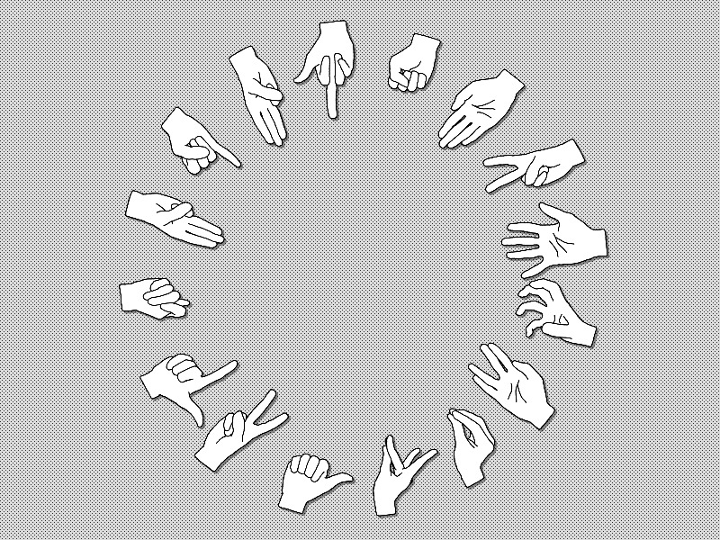

January 2019
Go, JavaScript
https://github.com/benhenshaw/screenplay
A text-based (and web-based) multi-player improvisational real-time text adventure. Each player is given a character profile and a set of goals which they have to try to fulfil. The initial demo was built with a single scenario, but the project was constructed with the goal of supporting many different stories, each with its own set of characters and verbs. I used the explicit goals to incentivise role-play by rewarding players for the use of a character’s catch-phrase or for employing their speech patterns.
December 2018
C, WinSock, BSD Sockets
https://github.com/benhenshaw/quick_udp
A small and simple library that allows easy sending and receiving of UDP packets. It abstracts differences between WinSock and BSD sockets, and abstracts the socket model slightly further simplify their usage in the context of video games.
Mid 2018 (Ongoing)
C, SDL2
https://github.com/benhenshaw/labyrinth
A software-rendered 2.5D FPS (in the style of Wolfenstein 3D) with network multi-player.
Early–Mid 2018
C, SDL2
https://github.com/benhenshaw/rhythm
Dissertation project for BSc Games Programming at Goldsmiths, University of London. It’s a simple rhythm game, implemented in C with the intent to build as many components of the software myself within the time constraints. In the end I wrote a memory allocator, software renderer, audio mixer, asset file reading and writing, and the game-play code for this project myself.
Early 2018
Escape Room (with additional software in C)
See the article.
Mid 2017
Lua, Löve2D, LuaSocket
https://salty.itch.io/magichands

See my GitHub repositories for more.